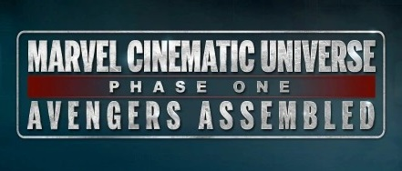

Universo cinematografico de Marvel
El Universo Cinematográfico de Marvel (en inglés, Marvel Cinematic Universe) es una franquicia creada por Marvel Studios, designada como la Tierra-199999 dentro del multiverso de Marvel, con algunas entregas también ubicadas en realidades adyacentes o ramificadas.
Este se separa en:
Saga del infinito:
Para posteriormente comenzar la Post-Saga del infinito
- Fase 4
Todas estas tiene un orden cronologico:
(El cual no esta necesariamente vinculado con el año en el que salio la pelicula)Aquí se pueden encontrar los próximos estrenos: